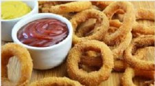
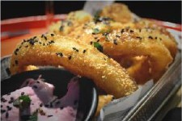

PARA ARRANCAR
| Marinera made in Murcia: Atún. Ensaladilla con anchoa del Cantábrico. | 1,90€ |
| Ensaladilla Rusa: Como la hacía mi madre. | 4,20€ |
| Nachos Pata Negra: Totopos de maíz con cheddar fundido, cebolleta, pimiento asado, guacamole, nata y un largo etc... (pide media por 9,50) | 9,30€ |
| Pollo Confetti: Pollo crujiente a nuestro rollo, más de 25 mil platos vendidos en 2019. Wow. | 5,50€ |
| Tarantino: Todo un queso fresco frito puro de cabra cubierto de confitura de tomate. | 6,50€ |
| Cumpleaños Inbal: Serán las bravas de siempre? (con nuestra alimoii) | 4,70€ |
| Aros G.L.A.S.: Érica es un orgullo vicioso de cebolla crujiente y salsas.. | 5,80€ |